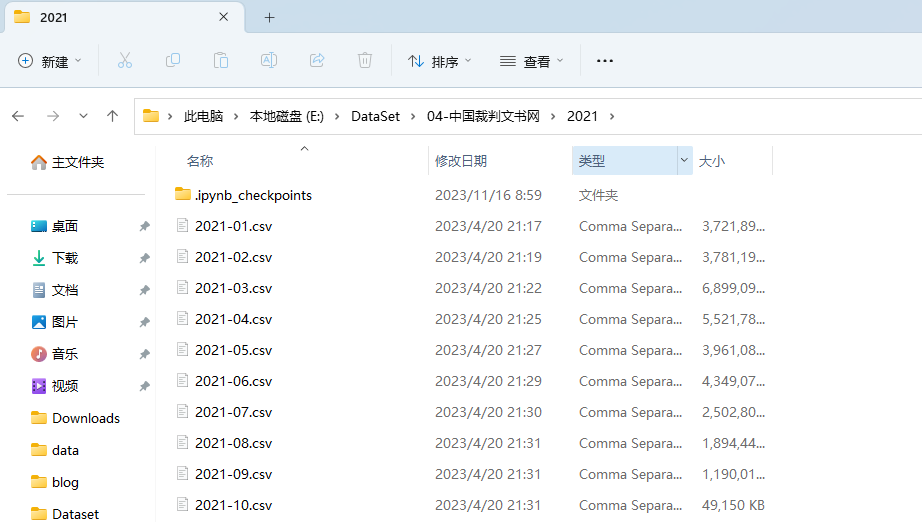
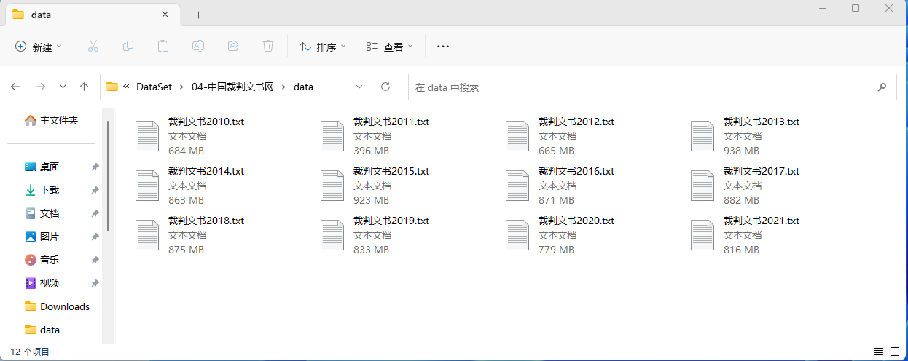

前阵子分享了 实验 | 使用 Stanford Glove 代码训练中文语料的 Glove 模型 ，后来我偷偷的修改了这篇技术文， 将 C 代码封装到 cntext2.x 内， 原来训练代码行几十行， 现在只需要两行就可以训练 GloVe 模型。
#pip3 install cntext --upgrade
import cntext as ct
g_wv = ct.GloVe(corpus_file='语料文件.txt', window_size=15, vector_size=200, lang='chinese')
一、检查数据
裁判文书数据集，每个月份存储到一个 csv， 每个年份有一个对应的文件夹。下图是 2021 年的文件夹截图 
csv 字段格式是一致的，我们只需要找一个文件，尝试着读取前 5 行，查看数据中有哪些字段。
import pandas as pd
df = pd.read_csv('2013/2013-01.csv', nrows=5)
df.dropna(subset=['文书内容'], inplace=True)
df.head(1)

二、训练词向量
2.1 构造语料
我们只从 csv 中选取 “文书内容” ，并将其存储到语料 txt 文件中。但全部裁判文书数据量高达 300G， 我希望文本语料控制在 10G 左右。
2010/2011/2013 这三个年度的数据只有几百 M， 数据全部保留。 剩下的年份，设置不同的抽样比例，尽可能将每年生成的语料 txt 文件控制在 1G 左右。
| 年份 | 解压后文件大小 | 抽样比例 | 语料 txt 大小 |
|---|---|---|---|
| 2010 | 761M | 100% | 684M |
| 2011 | 452M | 100% | 396M |
| 2012 | 757M | 100% | 665M |
| 2013 | 5.13G | 20% | 984M |
| 2014 | 23.7G | 4% | 905M |
| 2015 | 33.6G | 3% | 968M |
| 2016 | 39.9G | 2.4% | 914M |
| 2017 | 44.6G | 2.2% | 882M |
| 2018 | 24.8G | 4% | 875M |
| 2019 | 48.3G | 2% | 833M |
| 2020 | 91.2G | 1% | 779M |
| 2021 | 32.3G | 3% | 816M |
import os
import pandas as pd
from tqdm import tqdm
# 年份、抽样比例
year_fracs = [
('2010', 1), ('2011', 1), ('2012', 1),
('2013', 0.2), ('2014', 0.04), ('2015', 0.03),
('2016', 0.024), ('2017', 0.022), ('2018', 0.04),
('2019', 0.02), ('2020', 0.01), ('2021', 0.03)
]
with open('裁判文书.txt', 'w', encoding='utf-8') as corpus_file:
for year, frac in tqdm(year_fracs):
csvfs = [f'{year}/{csvf}' for csvf in os.listdir(year) if '.csv' in csvf]
for csvf in csvfs:
# 为节省内存开销，
# 只读 csv 中的 “文书内容” 一个字段，
# 且设置 chunksize 分批次读取
chunk_dfs = pd.read_csv(csvf, usecols=['文书内容'], chunksize=10000)
for chunk_df in chunk_dfs:
chunk_df.dropna(subset=['文书内容'], inplace=True)
text = '\n'.join(chunk_df['文书内容'].values)
corpus_file.write(text)
2.2 训练 GloVe
使用 cntext2.x 对代码进行了优化， 几个 G 的语料在 cntext 内预处理时候不会一次性读取全部内容，所以一般情况不会出现内存溢出问题。
基于语料 裁判文书.txt 训练 GloVe 词嵌入语言模型 ，参数 window_size=15, vector_size=200, 结果会自动保存到 output 文件夹内。

使用 cntext2.1.6， 代码如下
import cntext as ct
g_wv = ct.GloVe(corpus_file='裁判文书.txt', window_size=15, vector_size=200, lang='chinese')
Run
Mac(Linux) System, Enable Parallel Processing
Cache output/裁判文书_cache.txt Not Found, Preprocessing Corpus
Processing Corpus: 100%|██████████████████| 2502938/2502938 [26:37<00:00, 1566.54it/s]
Reading Preprocessed Corpus from output/裁判文书_cache.txt
Start Training GloVe
GloVe Training Cost 1223s.
Output Saved To: output/裁判文书-Word2Vec.200.15.bin
训练总耗时 1223s， 约 20 分钟。模型保存在 output/裁判文书-Word2Vec.200.15.bin， 该模型文件大小约为 1.58G。
2.3 评估模型
使用近义法和类比法， 判断模型的表现。详情可查看文档
ct.evaluate_similarity(g_wv)
Run
近义测试: similarity.txt
/Library/Frameworks/Python.framework/Versions/3.12/lib/python3.12/site-packages/cntext/model/evaluate_data/similarity.txt
Processing Similarity Test: 100%|███████████| 537/537 [00:00<00:00, 131978.28it/s]
评估结果：
+----------+------------+----------------------------+
| 发现词语 | 未发现词语 | Spearman's Rank Coeficient |
+----------+------------+----------------------------+
| 432 | 105 | 0.37 |
+----------+------------+----------------------------+
近义测试: Spearman’s Rank Coeficient 系数取值[-1, 1], 取值越大， 说明模型表现越好。
ct.evaluate_analogy(g_wv)
Run
类比测试: analogy.txt
/Library/Frameworks/Python.framework/Versions/3.12/lib/python3.12/site-packages/cntext/model/evaluate_data/analogy.txt
Processing Analogy Test: 100%|████████████████| 1198/1198 [00:48<00:00, 24.75it/s]
评估结果：
+--------------------+----------+------------+------------+----------+
| Category | 发现词语 | 未发现词语 | 准确率 (%) | 平均排名 |
+--------------------+----------+------------+------------+----------+
| CapitalOfCountries | 507 | 170 | 7.69 | 4.38 |
| CityInProvince | 175 | 0 | 98.86 | 1.39 |
| FamilyRelationship | 272 | 0 | 73.53 | 1.56 |
| SocialScience | 8 | 62 | 25.00 | 7.00 |
+--------------------+----------+------------+------------+----------+
类比测试:
- CapitalOfCountries 裁判文书语料在此项表现较差， 应该是数据库中涉外的案件较少。
- CityInProvince 裁判文书语料在此项表现如此优异，是因为几乎全为国内案件， 而案件描述一般会交待案发的省市等信息。
- FamilyRelationship 裁判文书语料中表现较好， 可能很多的案件会描述案件相关社会关系。
- SocialScience 裁判文书语料在此项表现一般， 应该是语料中常见的社会科学词语提及较少。
整体而言，语料训练的效果很不错，抓住了数据场景的独特性语义。
三、使用 GloVe
3.1 导入模型
使用 cntext2.1.6 读取很简单， 代码如下
g_wv = ct.load_w2v('output/裁判文书-Word2Vec.200.15.bin')
print(type(g_wv))
print(f'模型词汇量: {len(g_wv.wv)}')
Run
<class 'gensim.models.keyedvectors.KeyedVectors'>
模型词汇量: 2099102
3.2 KeyedVectors 的操作方法(或属性)
| 方法 | 描述 |
|---|---|
| KeyedVectors.index_to_key | 获取词汇表中的所有单词。 |
| KeyedVectors.key_to_index | 获取单词到索引的映射。 |
| KeyedVectors.vector_size | 获取 GloVe 模型中任意词向量的维度。 |
| KeyedVectors.get_vector(word) | 获取给定单词的词向量。 |
| KeyedVectors.similar_by_word(word, topn=10) | 获取某词语最相似的 10 个近义词。 |
| KeyedVectors.similar_by_vector(vector, topn=10) | 获取词向量最相似的 10 个近义词。 |
3.3 词表
查看词表
g_wv.index_to_key
Run
['被告',
'原告',
'本院',
'公司',
'规定',
'执行',
...
]
查看词汇映射表
g_wv.key_to_index
Run
{'被告': 0,
'原告': 1,
'本院': 2,
'公司': 3,
'规定': 4,
'执行': 5,
...
}
3.4 查看词向量
# 查询某词的词向量
g_wv.get_vector('经济')
Run
array([ 2.909250e-01, 9.074450e-01, 5.231860e-01, 5.381490e-01,
-2.813620e-01, 2.661690e-01, 1.045510e-01, -4.516240e-01,
-2.186710e-01, 1.867590e-01, -4.870700e-01, -1.803480e-01,
-6.361140e-01, -8.739630e-01, 3.418450e-01, 7.470900e-02,
......
......
2.636230e-01, -2.538920e-01, -2.442900e-02, 5.847510e-01,
5.135750e-01, -4.009650e-01, -3.629850e-01, 2.332400e-01,
-3.069630e-01, -4.182810e-01, 3.937240e-01, -8.510000e-01,
7.894350e-01, 3.969710e-01, 7.895660e-01, 4.881190e-01],
dtype=float32)
# 查询多个词的词向量
g_wv.get_mean_vector(['经济', '犯罪'])
Ruj
array([ 0.02923387, 0.04620265, 0.03790346, 0.01160904, -0.02162073,
0.01537724, 0.02025648, -0.03336571, -0.00447518, -0.00529976,
-0.02856204, 0.01545951, 0.00780857, -0.05398807, 0.02195465,
0.03140446, -0.02007412, 0.08278576, -0.027172 , -0.00272319,
......
0.0291778 , 0.03382879, -0.00913138, 0.04487584, 0.06375133,
0.032144 , -0.02788475, 0.05068161, 0.0122064 , 0.01759091,
-0.05560436, 0.00272704, -0.01176615, -0.08875326, 0.00767812,
-0.00486504, 0.10119167, -0.01212235, 0.06018812, 0.02998512],
dtype=float32)
3.5 近义词
根据词语查找最相似的 10 个词
g_wv.similar_by_word('动机', topn=10)
Run
[('主观', 0.6688777804374695),
('意图', 0.6248725652694702),
('恶性', 0.6005507111549377),
('蓄意', 0.5913136005401611),
('卑劣', 0.5908187627792358),
('作案动机', 0.5703221559524536),
('心态', 0.5640602707862854),
('故意', 0.5533956289291382),
('显而易见', 0.5524264574050903),
('恶意', 0.5509642958641052)]
根据某词的词向量查询最相似的 10 个词
g_wv.similar_by_vector(g_wv.get_vector('动机'), topn=10)
Run
[('动机', 0.9999999403953552),
('主观', 0.6688777804374695),
('意图', 0.6248724460601807),
('恶性', 0.600550651550293),
('蓄意', 0.5913134813308716),
('卑劣', 0.5908187627792358),
('作案动机', 0.5703221559524536),
('心态', 0.5640602707862854),
('故意', 0.5533955693244934),
('显而易见', 0.5524263381958008)]
多个词求得均值向量
purpose_vector = g_wv.get_mean_vector(['动机', '意图', '目的'])
g_wv.similar_by_vector(purpose_vector, topn=20)
Run
[('意图', 0.9032057523727417),
('目的', 0.8639562726020813),
('动机', 0.8277378678321838),
('主观', 0.7455390095710754),
('恶意', 0.7291366457939148),
('故意', 0.7236210107803345),
('客观', 0.7146263122558594),
('企图', 0.7049675583839417),
('行为', 0.6962229609489441),
('掩盖', 0.6917882561683655),
('所谓', 0.6809536218643188),
('并非', 0.667915403842926),
('手段', 0.6663289666175842),
('利益', 0.6568542718887329),
('这种', 0.6558799743652344),
('欺骗', 0.6545097231864929),
('违背', 0.6538694500923157),
('真相', 0.6527130007743835),
('显然', 0.6525647640228271),
('实质', 0.6521809101104736)]
四、获取模型
内容创作不易， 本文为付费内容，
- 裁判文书-GloVe.200.15.bin https://pan.baidu.com/s/1a0Fisvnkl8UaQZrHP7olCQ?pwd=8w49
- 更多词向量模型 https://cntext.readthedocs.io/zh-cn/latest/embeddings.html